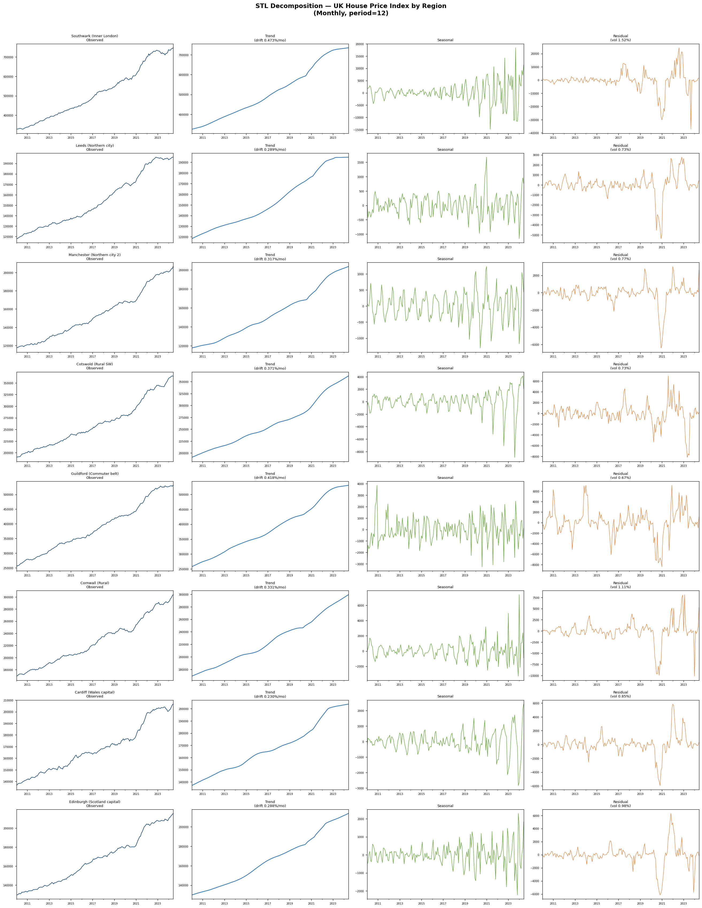
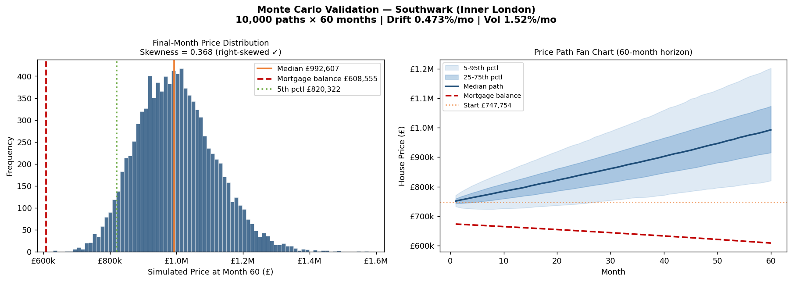

Headline Findings
- London leads on risk: Average PTI ratio above 12× at base rates; repayments consume 80–110% of gross monthly income for a median earner.
- +2% Bank Rate scenario: Negative equity probability rises to ~1.8% mean and up to 5.4% in the highest-risk London boroughs within a 5-year horizon. North East England remains below 0.1%.
- Wales / Northern Ireland thin-equity risk: Low absolute prices mask thin equity buffers — NE probability exceeds 0.5% at +2%, above much of the South East.
Scenario Choropleth Maps
🗺️
−1% Bank Rate (2.75%)
NE probability across all 342 LADs with rates 100bps below base.
Interactive Map
🗺️
Base (3.75%)
Baseline NE probability at current Bank Rate.
Interactive Map
🗺️
+1% Bank Rate (4.75%)
Stress scenario: rates 100bps above base.
Interactive Map
🗺️
+2% Bank Rate (5.75%)
Severe stress: rates 200bps above base — equivalent to 2023 peak.
Interactive Map
Analysis Outputs
📄
Executive Briefing PDF
1-page senior stakeholder summary with headline findings, top-10 risk LADs, and policy recommendations.
PDF
📈
STL Decomposition Plots
Seasonal-trend decomposition across 8 representative local authorities — calibrates the Monte Carlo drift and volatility parameters.
Chart
🎲
Monte Carlo Validation
Southwark fan chart and final-month histogram (skewness = +0.37 ✓) confirming log-normal price path structure.
Chart
📊
Live Dash App
Full interactive dashboard on Render.com — scenario dropdown + click-through LAD detail panel. May take ~30s to wake.
External ↗
{kind=link}
{kind=link}
Analysis Plots


Tech Stack
Python 3.10+
pandas
numpy
statsmodels STL
scipy
PostgreSQL 14
SQLAlchemy
geopandas
folium
plotly
Plotly Dash
matplotlib
reportlab
Render.com
GitHub Pages
Methodology Summary
- Monte Carlo engine: 10,000 paths × 60 months, Geometric Brownian Motion — Pt = Pt−1 × exp(rt), rt ~ N(μ, σ²). Drift and volatility calibrated per region from STL residuals.
- Affordability persona: 90% LTV (FCA FTB mode band), 25-year capital repayment, ONS ASHE Table 8 regional median earnings.
- Rate pass-through: OLS on BoE 90% LTV series 2009–2024 → MortgageRate = 1.70 + 0.85 × BankRate. Not 1:1.
- Rate–price sensitivity: −0.08% house price drift per month per 1pp Bank Rate change — calibrated to 2022–23 tightening (+5pp → −5% over 18 months).
- Limitation: Normal returns underestimate crash tail risk (2008 London: −17% vs model 5th pctl −2%). Future work: jump-diffusion or GARCH models.